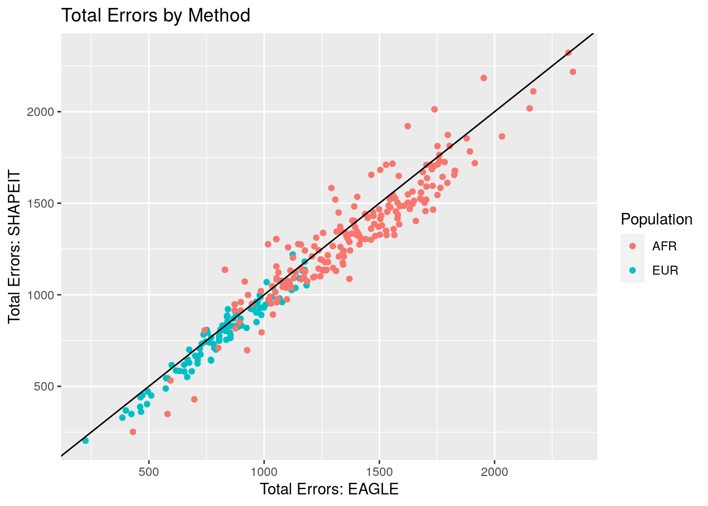
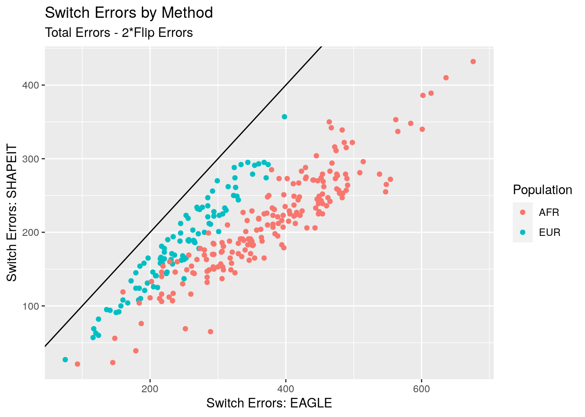
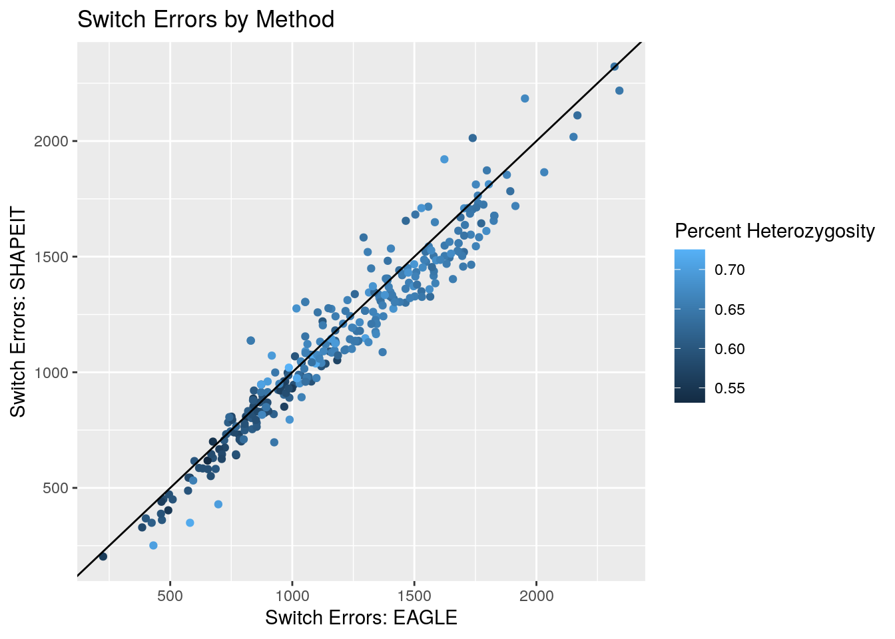

masked_diploid_results
Andy Beck
2022-04-20
Last updated: 2022-05-02
Checks: 6 1
Knit directory: phasing/
This reproducible R Markdown analysis was created with workflowr (version 1.7.0). The Checks tab describes the reproducibility checks that were applied when the results were created. The Past versions tab lists the development history.
Great! Since the R Markdown file has been committed to the Git repository, you know the exact version of the code that produced these results.
Great job! The global environment was empty. Objects defined in the global environment can affect the analysis in your R Markdown file in unknown ways. For reproduciblity it’s best to always run the code in an empty environment.
The command set.seed(20220221) was run prior to running
the code in the R Markdown file. Setting a seed ensures that any results
that rely on randomness, e.g. subsampling or permutations, are
reproducible.
Great job! Recording the operating system, R version, and package versions is critical for reproducibility.
Nice! There were no cached chunks for this analysis, so you can be confident that you successfully produced the results during this run.
Using absolute paths to the files within your workflowr project makes it difficult for you and others to run your code on a different machine. Change the absolute path(s) below to the suggested relative path(s) to make your code more reproducible.
| absolute | relative |
|---|---|
| /net/snowwhite/home/beckandy/research/phasing/output/19april22_switch_errors/switch_errors/eagle/annotated/ | output/19april22_switch_errors/switch_errors/eagle/annotated |
| /net/snowwhite/home/beckandy/research/phasing/output/19april22_switch_errors/switch_errors/shapeit/annotated/ | output/19april22_switch_errors/switch_errors/shapeit/annotated |
| /net/snowwhite/home/beckandy/research/phasing/output/19april22_switch_errors/vcf_n_sites/ | output/19april22_switch_errors/vcf_n_sites |
| /net/snowwhite/home/beckandy/research/phasing/output/19april22_switch_errors/whatshap/ | output/19april22_switch_errors/whatshap |
| /net/snowwhite/home/beckandy/research/phasing/output/background_rates/dimer.csv | output/background_rates/dimer.csv |
| /net/snowwhite/home/beckandy/research/phasing/output/background_rates/3mer.csv | output/background_rates/3mer.csv |
| /net/snowwhite/home/beckandy/research/phasing/data/sample_pairs_all.csv | data/sample_pairs_all.csv |
Great! You are using Git for version control. Tracking code development and connecting the code version to the results is critical for reproducibility.
The results in this page were generated with repository version 0add4ba. See the Past versions tab to see a history of the changes made to the R Markdown and HTML files.
Note that you need to be careful to ensure that all relevant files for
the analysis have been committed to Git prior to generating the results
(you can use wflow_publish or
wflow_git_commit). workflowr only checks the R Markdown
file, but you know if there are other scripts or data files that it
depends on. Below is the status of the Git repository when the results
were generated:
Ignored files:
Ignored: .Rhistory
Ignored: .Rproj.user/
Ignored: data/first_attempt/
Ignored: data/ref/
Ignored: data/shapeit/
Ignored: output/11april22_switch_errors/
Ignored: output/14mar22_switch_errors/
Ignored: output/16mar22_switch_errors/
Ignored: output/18mar22_switch_errors/
Ignored: output/19april22_switch_errors/
Ignored: output/background_rates/
Ignored: output/switch_error_test/
Ignored: sandbox/
Untracked files:
Untracked: Rplots.pdf
Untracked: analysis/Rplots.pdf
Untracked: analysis/first_phase_test.Rmd
Untracked: analysis/first_phasing_results.Rmd
Untracked: analysis/gc_content.Rmd
Untracked: analysis/shift_error_ex.Rmd
Untracked: code/background_3mer.py
Untracked: code/background_dimer.py
Unstaged changes:
Modified: analysis/build_a_vcf.Rmd
Modified: analysis/captains_log.Rmd
Modified: analysis/data_exploration.Rmd
Modified: code/batch_annotate_switch.sh
Modified: code/batch_diploid_analysis.sh
Modified: code/sample_X_pairs.R
Note that any generated files, e.g. HTML, png, CSS, etc., are not included in this status report because it is ok for generated content to have uncommitted changes.
These are the previous versions of the repository in which changes were
made to the R Markdown
(analysis/masked_diploid_results.Rmd) and HTML
(docs/masked_diploid_results.html) files. If you’ve
configured a remote Git repository (see ?wflow_git_remote),
click on the hyperlinks in the table below to view the files as they
were in that past version.
| File | Version | Author | Date | Message |
|---|---|---|---|---|
| Rmd | 0add4ba | Andy Beck | 2022-05-02 | wflow_publish("analysis/masked_diploid_results.Rmd") |
library(tidyverse)── Attaching packages ─────────────────────────────────────── tidyverse 1.3.1 ──✓ ggplot2 3.3.5 ✓ purrr 0.3.4
✓ tibble 3.1.6 ✓ dplyr 1.0.8
✓ tidyr 1.2.0 ✓ stringr 1.4.0
✓ readr 2.1.2 ✓ forcats 0.5.1── Conflicts ────────────────────────────────────────── tidyverse_conflicts() ──
x dplyr::filter() masks stats::filter()
x dplyr::lag() masks stats::lag()eagle_switch_dir <- "/net/snowwhite/home/beckandy/research/phasing/output/19april22_switch_errors/switch_errors/eagle/annotated/"
shapeit_switch_dir <- "/net/snowwhite/home/beckandy/research/phasing/output/19april22_switch_errors/switch_errors/shapeit/annotated/"
num_sites_dir <- "/net/snowwhite/home/beckandy/research/phasing/output/19april22_switch_errors/vcf_n_sites/"
whatshap_dir <- "/net/snowwhite/home/beckandy/research/phasing/output/19april22_switch_errors/whatshap/"
pair_info_df <- read_delim("data/sample_pairs_all.csv", col_names = c("POP", "ID1", "ID2"))Rows: 300 Columns: 3── Column specification ────────────────────────────────────────────────────────
Delimiter: ","
chr (3): POP, ID1, ID2
ℹ Use `spec()` to retrieve the full column specification for this data.
ℹ Specify the column types or set `show_col_types = FALSE` to quiet this message.pair_info_df$SP <- c(rep("EUR", 100), rep("AFR", 200))
gc_content_1kb <- read_tsv("data/gc1kb_X_only.bed")Rows: 156041 Columns: 12
── Column specification ────────────────────────────────────────────────────────
Delimiter: "\t"
chr (1): #1_usercol
dbl (11): 2_usercol, 3_usercol, 4_pct_at, 5_pct_gc, 6_num_A, 7_num_C, 8_num_...
ℹ Use `spec()` to retrieve the full column specification for this data.
ℹ Specify the column types or set `show_col_types = FALSE` to quiet this message.colnames(gc_content_1kb) <- c("CHR", "START", "END", "AT", "GC", "A", "C", "G", "T", "TOTAL", "OTHER", "LENGTH")
gc_content_1kb <- gc_content_1kb %>%
mutate(bin_id = (START / 1000) + 1)
background_dimer <- read_csv("/net/snowwhite/home/beckandy/research/phasing/output/background_rates/dimer.csv")Rows: 16 Columns: 2
── Column specification ────────────────────────────────────────────────────────
Delimiter: ","
chr (1): Nucs
dbl (1): N
ℹ Use `spec()` to retrieve the full column specification for this data.
ℹ Specify the column types or set `show_col_types = FALSE` to quiet this message.background_3mer <- read_csv("/net/snowwhite/home/beckandy/research/phasing/output/background_rates/3mer.csv")Rows: 64 Columns: 2
── Column specification ────────────────────────────────────────────────────────
Delimiter: ","
chr (1): Nucs
dbl (1): N
ℹ Use `spec()` to retrieve the full column specification for this data.
ℹ Specify the column types or set `show_col_types = FALSE` to quiet this message.Introduction
We’ve refined our analyses in a few ways since the first run-through of this pseudo-diploid analysis. First let’s list out everything I’ve done to get to this point:
- Subset the reference genome to just the X chromosome using
fastafetch - Download pilot mask from 1KGP along with chromosome lengths for hg38
- Take complement of mask with bedtools to get file with masked regions (as opposed to included regions)
- Mask both the reference fasta (
bedtools maskfasta) and the 1KGP X chromosome vcffreeze9.1000g.chrX.filtered.gtonly.minDP10.minAC1.PASS.phased.vcf.gz
- Make window files (
bedtools makewindows) - Get GC content in windows (
bedtools nuc) using masked fasta - Remove PAR from X chromosome
Using these masked reference and variant files, we proceeded to do our pseudo-diploid generation on 100 EUR and 200 AFR pairs:
- Sample a sub-population from 1KGP super-population (EUR or AFR)
- Sample 2 male samples from sub-population
- Remove remaining heterozygous sites in either subject (should not be heterozygous in non-PAR)
- Create truth VCF with haploids pasted together, and test vcf with sites in haploids shuffled
- Create reference VCF by removing two sampled subjects
- Phase the test VCF using EAGLE and SHAPEIT
- Compare phasing results and truth using
vcftoolsandwhatshap
With those preliminaries out of the way, let’s take a look at these results.
Example of a single pseudodiploid
For a first pass, let’s take a look at the information available for a single pseudo-diploid:
pair_id <- 1
switch_err_eagle <- read_csv(paste0(eagle_switch_dir, "switch_", pair_id, ".csv"))Rows: 965 Columns: 6
── Column specification ────────────────────────────────────────────────────────
Delimiter: ","
chr (2): motif_start, end_motif
dbl (4): pos_start, pos_end, cpg_start, cpg_end
ℹ Use `spec()` to retrieve the full column specification for this data.
ℹ Specify the column types or set `show_col_types = FALSE` to quiet this message.switch_err_shapeit <- read_csv(paste0(shapeit_switch_dir, "switch_", pair_id, ".csv"))Rows: 961 Columns: 6
── Column specification ────────────────────────────────────────────────────────
Delimiter: ","
chr (2): motif_start, end_motif
dbl (4): pos_start, pos_end, cpg_start, cpg_end
ℹ Use `spec()` to retrieve the full column specification for this data.
ℹ Specify the column types or set `show_col_types = FALSE` to quiet this message.whatshap_eagle <- read_tsv(paste0(whatshap_dir, "/eagle/eval_", pair_id, ".tsv"))Rows: 1 Columns: 28
── Column specification ────────────────────────────────────────────────────────
Delimiter: "\t"
chr (8): #sample, chromosome, dataset_name0, dataset_name1, file_name0, fil...
dbl (20): intersection_blocks, covered_variants, all_assessed_pairs, all_swi...
ℹ Use `spec()` to retrieve the full column specification for this data.
ℹ Specify the column types or set `show_col_types = FALSE` to quiet this message.whatshap_shapeit <- read_tsv(paste0(whatshap_dir, "/shapeit/eval_", pair_id, ".tsv"))Rows: 1 Columns: 28
── Column specification ────────────────────────────────────────────────────────
Delimiter: "\t"
chr (8): #sample, chromosome, dataset_name0, dataset_name1, file_name0, fil...
dbl (20): intersection_blocks, covered_variants, all_assessed_pairs, all_swi...
ℹ Use `spec()` to retrieve the full column specification for this data.
ℹ Specify the column types or set `show_col_types = FALSE` to quiet this message.From the above we can get the raw number of total switches based on the dimension of the switch error data frames; in this example, we see that EAGLE has 965 switches and SHAPEIT has 961 switches.
From the whatshap output, we also get a breakdown between how many of
the total switches are flips. For example, the breakdown between
switches and flips (switches/flips) in EAGLE is 289/338, and
correspondingly in SHAPEIT we see 211/375. What we would really like is
to know the locations of the flips, which we unfortunatly don’t have
from neither vcftools nor whatshap.
Fortunately I believe the little chunk of code below correctly counts
flips in the vcftools output:
count <- 0
in_progress <- FALSE
for(i in 1:(length(switch_err_eagle$pos_start)-1)){
if(switch_err_eagle$pos_end[i] == switch_err_eagle$pos_start[i+1]){
if(!in_progress){
count <- count+1
in_progress <- TRUE
} else{
in_progress <- FALSE
}
} else{
in_progress <- FALSE
}
}
print(count)[1] 338Let’s wrap this in a function and get a list of flip positions:
get_flip_pos <- function(df){
flip_list <- c()
in_progress <- FALSE
for(i in 1:(length(df$pos_start)-1)){
if(df$pos_end[i] == df$pos_start[i+1]){
if(!in_progress){
in_progress <- TRUE
flip_list <- c(flip_list, df$pos_end[i])
} else{
in_progress <- FALSE
}
} else{
in_progress <- FALSE
}
}
return(flip_list)
}
flip_pos_eagle <- get_flip_pos(switch_err_eagle)
flip_pos_shapeit <- get_flip_pos(switch_err_shapeit)Just to satisfy my curiosity, let’s see how many of the flip positions are shared between the methods:
intersect(flip_pos_eagle, flip_pos_shapeit) %>% length()[1] 191And moving on, let’s go ahead and annotate each switch in the
vcftools output with whether or not it is a flip:
switch_err_eagle$is_flip <- switch_err_eagle$pos_start %in% flip_pos_eagle
switch_err_shapeit$is_flip <- switch_err_shapeit$pos_start %in% flip_pos_shapeitAlright, one last thing we’ll look at for this pair is the proportion of all switches and flips are CpGs and contrast this with the background rate of dimers. For reference, the distribution of dimers in the X chromosome is:
background_dimer# A tibble: 16 × 2
Nucs N
<chr> <dbl>
1 AA 14628685
2 AC 7264337
3 AG 9841023
4 AT 11735166
5 CA 10391331
6 CC 6920168
7 CG 1133731
8 CT 9846580
9 GA 8486790
10 GC 5619375
11 GG 6935465
12 GT 7287386
13 TA 9961129
14 TC 8487812
15 TG 10420031
16 TT 14715291and by summing up the number of CG and GC sites and dividing by the total we see that the proportion of sites that are CpGs is 0.0470029 (around 4.7%)
background_cpg <- (5619375 + 1133731) / sum(background_dimer$N)
switch_err_eagle %>%
filter(is_flip == TRUE) %>%
pull(cpg_start) %>%
table().
0 1
302 36 Here for EAGLE we see that about 10.6% of flips occur at CpG sites.
switch_err_shapeit %>%
filter(is_flip == TRUE) %>%
pull(cpg_start) %>%
table().
0 1
335 40 SHAPEIT also has ~ 10.6% of its flips at CpG. Now looking at overall number of switches:
switch_err_eagle %>%
pull(cpg_start) %>%
table().
0 1
886 79 switch_err_shapeit %>%
pull(cpg_start) %>%
table().
0 1
872 89 8.2% and 9.3% of switches at CpG.
GC Content
switch_err_eagle <- switch_err_eagle %>%
mutate(bin_id = ceiling(pos_start / 1000))
switch_err_shapeit <- switch_err_shapeit %>%
mutate(bin_id = ceiling(pos_start / 1000))
switch_err_eagle <- switch_err_eagle %>%
left_join({gc_content_1kb %>% select(bin_id, GC)}, by = "bin_id")
switch_err_shapeit <- switch_err_shapeit %>%
left_join({gc_content_1kb %>% select(bin_id, GC)}, by = "bin_id")Summary Statisitics Across All Pseudo-diploids
Let’s grab:
- Number of heterozygous sites per diploid
- EAGLE phase confidence
- Total number of switch errors for each method
- Number of flips for each method
- Percent of flips and switches that were CpG site
- Average percent GC in 1kb windows
Pair information
df_pair <- read_csv("/net/snowwhite/home/beckandy/research/phasing/data/sample_pairs_all.csv",
col_names = c("pop", "sub1", "sub2"), show_col_types = FALSE) %>%
rename(sub_pop = pop)
df_pair$pop <- c(rep("EUR", 100), rep("AFR", 200))
df_pair$pair_id <- 1:300EAGLE Phase Confidence
input_cmd <- "grep \"^FAKE001\" /net/snowwhite/home/beckandy/research/phasing/output/19april22_switch_errors/slurm/pair.*.out | awk '{print($1, \"\\t\", $2)}'"
df_eagle_conf <- vroom::vroom(pipe(input_cmd), delim = "\t", col_names = c("f_name", "phase_confidence")) %>%
rowwise() %>%
mutate(pair_id = as.numeric(str_split(f_name, "\\.")[[1]][3])) %>%
select(pair_id, phase_confidence) %>%
arrange(pair_id)Rows: 300 Columns: 2
── Column specification ────────────────────────────────────────────────────────
Delimiter: "\t"
chr (1): f_name
dbl (1): phase_confidence
ℹ Use `spec()` to retrieve the full column specification for this data.
ℹ Specify the column types or set `show_col_types = FALSE` to quiet this message.df_eagle_conf$pop <- c(rep("EUR", 100), rep("AFR", 200))Oh, let’s make a density plot, shall we?
df_eagle_conf %>%
ggplot(aes(x = phase_confidence, colour = pop)) +
geom_density() +
ggtitle("EAGLE2 Phase Confidence")
Number of sites
input_cmd <- "cat /net/snowwhite/home/beckandy/research/phasing/output/19april22_switch_errors/vcf_n_sites/*all*"
df_pseudo_sites <- vroom::vroom(pipe(input_cmd), delim = "\t", col_names = c("pair_id", "n_sites")) %>%
arrange(pair_id)Rows: 300 Columns: 2
── Column specification ────────────────────────────────────────────────────────
Delimiter: "\t"
dbl (2): pair_id, n_sites
ℹ Use `spec()` to retrieve the full column specification for this data.
ℹ Specify the column types or set `show_col_types = FALSE` to quiet this message.df_pseudo_sites$pop <- c(rep("EUR", 100), rep("AFR", 200))And just to plot things out as we go, let’s look at the density stratified by super-pop:
df_pseudo_sites %>%
ggplot(aes(x = n_sites, colour = pop)) +
geom_density() +
ggtitle("Number of Sites per Pseudo-diploid")Number of heterozygous sites
input_cmd <- "cat /net/snowwhite/home/beckandy/research/phasing/output/19april22_switch_errors/vcf_n_sites/*hets*"
df_pseudo_hets <- vroom::vroom(pipe(input_cmd), delim = "\t", col_names = c("pair_id", "n_het_sites")) %>%
arrange(pair_id)Rows: 300 Columns: 2
── Column specification ────────────────────────────────────────────────────────
Delimiter: "\t"
dbl (2): pair_id, n_het_sites
ℹ Use `spec()` to retrieve the full column specification for this data.
ℹ Specify the column types or set `show_col_types = FALSE` to quiet this message.df_pseudo_hets$pop <- c(rep("EUR", 100), rep("AFR", 200))df_pseudo_hets %>%
ggplot(aes(x = n_het_sites, colour = pop)) +
geom_density() +
xlab("Number of heterozygous sites") +
ggtitle("Number of Heterozygous Sites per Pseudo-diploid")Switches and Flips
switch_summary <- function(pair_id, eagle_dir, shapeit_dir, gc_content_1kb, bin_size = 1000){
switch_err_eagle <- read_csv(paste0(eagle_dir, "switch_", pair_id, ".csv"), show_col_types = FALSE) %>%
mutate(bin_id = ceiling(pos_start / bin_size))
switch_err_shapeit <- read_csv(paste0(shapeit_dir, "switch_", pair_id, ".csv"), show_col_types = FALSE) %>%
mutate(bin_id = ceiling(pos_start / bin_size))
switch_err_eagle <- switch_err_eagle %>%
left_join({gc_content_1kb %>% select(bin_id, GC)}, by = "bin_id")
switch_err_shapeit <- switch_err_shapeit %>%
left_join({gc_content_1kb %>% select(bin_id, GC)}, by = "bin_id")
# get positions of flips
flip_pos_eagle <- get_flip_pos(switch_err_eagle)
flip_pos_shapeit <- get_flip_pos(switch_err_shapeit)
# Assign switches flip status
switch_err_eagle$is_flip <- switch_err_eagle$pos_start %in% flip_pos_eagle
switch_err_shapeit$is_flip <- switch_err_shapeit$pos_start %in% flip_pos_shapeit
# stats we want to pull
n_switch_eagle <- length(switch_err_eagle$pos_start)
n_switch_shapeit <- length(switch_err_shapeit$pos_start)
n_flip_eagle <- sum(switch_err_eagle$is_flip)
n_flip_shapeit <- sum(switch_err_shapeit$is_flip)
n_switch_cpg_eagle <- switch_err_eagle %>%
filter(cpg_start == 1) %>%
pull(is_flip) %>%
length()
n_flip_cpg_eagle <- switch_err_eagle %>%
filter(cpg_start == 1) %>%
pull(is_flip) %>%
sum()
n_switch_cpg_shapeit <- switch_err_shapeit %>%
filter(cpg_start == 1) %>%
pull(is_flip) %>%
length()
n_flip_cpg_shapeit <- switch_err_shapeit %>%
filter(cpg_start == 1) %>%
pull(is_flip) %>%
sum()
mean_gc_switch_eagle <- mean(switch_err_eagle$GC)
mean_gc_switch_shapeit <- mean(switch_err_shapeit$GC)
return(data.frame(pair_id = pair_id,
n_switch_eagle = n_switch_eagle,
n_switch_shapeit = n_switch_shapeit,
n_flip_eagle = n_flip_eagle,
n_flip_shapeit = n_flip_shapeit,
n_switch_cpg_eagle = n_switch_cpg_eagle,
n_flip_cpg_eagle = n_flip_cpg_eagle,
n_switch_cpg_shapeit = n_switch_cpg_shapeit,
n_flip_cpg_shapeit = n_flip_cpg_shapeit,
mean_gc_switch_eagle = mean_gc_switch_eagle,
mean_gc_switch_shapeit = mean_gc_switch_shapeit
))
}And now let’s get the rows for all 300 pseudo-diploids:
switch_df <- lapply(c(1:300),
function(x){
switch_summary(x, eagle_switch_dir, shapeit_switch_dir, gc_content_1kb)
}) %>%
bind_rows()
switch_df$pop <- c(rep("EUR", 100), rep("AFR", 200))Smash everything together into a single data frame
df <- full_join(switch_df, df_pair, by = c("pair_id", "pop")) %>%
full_join(df_eagle_conf, by = c("pair_id", "pop")) %>%
full_join(df_pseudo_sites, by = c("pair_id", "pop")) %>%
full_join(df_pseudo_hets, by = c("pair_id", "pop"))And now: we make graphs
Number of switch error
df %>%
ggplot(aes(x = n_switch_eagle, y = n_switch_shapeit, colour = pop)) +
geom_point() +
geom_abline(slope = 1, intercept = 0) +
xlab("Switch Errors: EAGLE") +
ylab("Switch Errors: SHAPEIT") +
ggtitle("Switch Errors by Method")
df %>%
ggplot(aes(x = n_switch_eagle, y = n_switch_shapeit, colour = pop)) +
geom_point() +
geom_abline(slope = 1, intercept = 0) +
xlab("Switch Errors: EAGLE") +
ylab("Switch Errors: SHAPEIT") +
ggtitle("Switch Errors by Method")
Number of switch error - % heterozygosity
df %>%
mutate(pct_het = n_het_sites / n_sites) %>%
ggplot(aes(x = n_switch_eagle, y = n_switch_shapeit, colour = pct_het)) +
geom_point() +
geom_abline(slope = 1, intercept = 0) +
xlab("Switch Errors: EAGLE") +
ylab("Switch Errors: SHAPEIT") +
ggtitle("Switch Errors by Method")
Number of flip error
df %>%
ggplot(aes(x = n_flip_eagle, y = n_flip_shapeit, colour = pop)) +
geom_point() +
geom_abline(slope = 1, intercept = 0) +
xlab("Flips: EAGLE") +
ylab("Flips: SHAPEIT") +
ggtitle("Flips by Method")
df %>%
mutate(prop1 = n_switch_cpg_eagle / n_switch_eagle,
prop2 = n_switch_cpg_shapeit / n_switch_shapeit) %>%
ggplot(aes(x = prop1, y = prop2, colour = pop)) +
geom_point() +
geom_abline(slope = 1, intercept = 0) +
xlab("Proportion Switches CpG: EAGLE") +
ylab("Proportion Switches CpG: SHAPEIT") +
ggtitle("Proportion Switches CpG by Method")
Density version of above plot:
df %>%
mutate(eagle = n_switch_cpg_eagle / n_switch_eagle,
shapeit = n_switch_cpg_shapeit / n_switch_shapeit) %>%
select(pair_id, pop, eagle, shapeit) %>%
pivot_longer(eagle:shapeit, "method", values_to = "switch_enrich") %>%
ggplot(aes(x = switch_enrich, colour = method)) +
geom_density() +
ggtitle("Total Error Proportion CpG") +
xlab("CpG Error Proportion")
df %>%
mutate(prop1 = n_flip_cpg_eagle / n_flip_eagle,
prop2 = n_flip_cpg_shapeit / n_flip_shapeit) %>%
ggplot(aes(x = prop1, y = prop2, colour = pop)) +
geom_point() +
geom_abline(slope = 1, intercept = 0) +
xlab("Proportion Flips CpG: EAGLE") +
ylab("Proportion Flips CpG: SHAPEIT") +
ggtitle("Proportion Flips CpG by Method")
df %>%
mutate(eagle = n_flip_cpg_eagle / n_flip_eagle,
shapeit = n_flip_cpg_shapeit / n_flip_shapeit) %>%
select(pair_id, pop, eagle, shapeit) %>%
pivot_longer(eagle:shapeit, "method", values_to = "flip_enrich") %>%
ggplot(aes(x = flip_enrich, colour = method)) +
geom_density() +
ggtitle("Flip Proportion CpG") +
xlab("CpG Flip Proportion")
New stuff post meeting
Ratio of proportion errors to background CpG rate
df %>%
mutate(enrich_eagle = (n_switch_cpg_eagle/n_switch_eagle) / background_cpg,
enrich_shapeit = (n_switch_cpg_shapeit/n_switch_shapeit) / background_cpg) %>%
ggplot(aes(x = enrich_eagle, y = enrich_shapeit, color = pop)) +
geom_point() +
geom_abline(slope = 1, intercept = 0) +
ggtitle("Total Error CpG Enrichment") +
xlab("EAGLE enrichment") +
ylab("SHAPEIT enrichment") 
df %>%
mutate(eagle = (n_switch_cpg_eagle/n_switch_eagle) / background_cpg,
shapeit = (n_switch_cpg_shapeit/n_switch_shapeit) / background_cpg) %>%
select(pair_id, pop, eagle, shapeit) %>%
pivot_longer(eagle:shapeit, "method", values_to = "flip_enrich") %>%
ggplot(aes(x = flip_enrich, colour = method)) +
geom_density() +
ggtitle("Flip Proportion CpG") +
xlab("CpG Flip Proportion")
CpG Flip Enrichment
df %>%
mutate(enrich_eagle = (n_flip_cpg_eagle/n_flip_eagle) / background_cpg,
enrich_shapeit = (n_flip_cpg_shapeit/n_flip_shapeit) / background_cpg) %>%
ggplot(aes(x = enrich_eagle, y = enrich_shapeit, color = pop)) +
geom_point() +
geom_abline(slope = 1, intercept = 0) +
xlab("EAGLE enrichment") +
ylab("SHAPEIT enrichment") +
ggtitle("Flip CpG Enrichment")
sessionInfo()R version 4.2.0 (2022-04-22)
Platform: x86_64-pc-linux-gnu (64-bit)
Running under: Ubuntu 18.04.6 LTS
Matrix products: default
BLAS: /usr/lib/x86_64-linux-gnu/openblas/libblas.so.3
LAPACK: /usr/lib/x86_64-linux-gnu/libopenblasp-r0.2.20.so
locale:
[1] LC_CTYPE=en_US.UTF-8 LC_NUMERIC=C
[3] LC_TIME=en_US.UTF-8 LC_COLLATE=en_US.UTF-8
[5] LC_MONETARY=en_US.UTF-8 LC_MESSAGES=en_US.UTF-8
[7] LC_PAPER=en_US.UTF-8 LC_NAME=C
[9] LC_ADDRESS=C LC_TELEPHONE=C
[11] LC_MEASUREMENT=en_US.UTF-8 LC_IDENTIFICATION=C
attached base packages:
[1] stats graphics grDevices utils datasets methods base
other attached packages:
[1] forcats_0.5.1 stringr_1.4.0 dplyr_1.0.8 purrr_0.3.4
[5] readr_2.1.2 tidyr_1.2.0 tibble_3.1.6 ggplot2_3.3.5
[9] tidyverse_1.3.1 workflowr_1.7.0
loaded via a namespace (and not attached):
[1] Rcpp_1.0.8 lubridate_1.8.0 getPass_0.2-2 ps_1.6.0
[5] assertthat_0.2.1 rprojroot_2.0.2 digest_0.6.29 utf8_1.2.2
[9] cellranger_1.1.0 R6_2.5.1 backports_1.4.1 reprex_2.0.1
[13] evaluate_0.14 httr_1.4.2 highr_0.9 pillar_1.7.0
[17] rlang_1.0.1 readxl_1.3.1 rstudioapi_0.13 whisker_0.4
[21] callr_3.7.0 jquerylib_0.1.4 rmarkdown_2.11 labeling_0.4.2
[25] bit_4.0.4 munsell_0.5.0 broom_0.8.0 compiler_4.2.0
[29] httpuv_1.6.5 modelr_0.1.8 xfun_0.29 pkgconfig_2.0.3
[33] htmltools_0.5.2 tidyselect_1.1.1 fansi_1.0.2 withr_2.4.3
[37] crayon_1.4.2 tzdb_0.2.0 dbplyr_2.1.1 later_1.3.0
[41] grid_4.2.0 jsonlite_1.7.3 gtable_0.3.0 lifecycle_1.0.1
[45] DBI_1.1.2 git2r_0.29.0 magrittr_2.0.2 scales_1.1.1
[49] vroom_1.5.7 cli_3.1.1 stringi_1.7.6 farver_2.1.0
[53] fs_1.5.2 promises_1.2.0.1 xml2_1.3.3 bslib_0.3.1
[57] ellipsis_0.3.2 generics_0.1.2 vctrs_0.3.8 tools_4.2.0
[61] bit64_4.0.5 glue_1.6.1 hms_1.1.1 parallel_4.2.0
[65] processx_3.5.2 fastmap_1.1.0 yaml_2.2.2 colorspace_2.0-2
[69] rvest_1.0.2 knitr_1.37 haven_2.4.3 sass_0.4.0